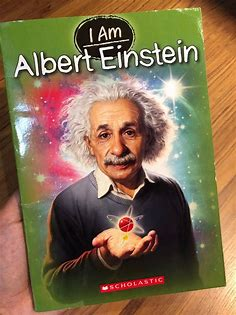
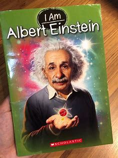

Albert_Einstein

Albert Einstein
Albert Einstein was a theoretical physicist who revolutionized science with his theory of relativity. His famous equation, E=mc², established the relationship between mass and energy, transforming our understanding of the universe.
Born in Germany in 1879, Einstein showed a curiosity for mathematics and physics at a young age. He worked as a patent clerk while developing his groundbreaking theories, including special relativity, which introduced the concept of spacetime. In 1921, he was awarded the Nobel Prize in Physics for his explanation of the photoelectric effect.
Throughout his life, Einstein was an outspoken advocate for peace and human rights. His later years were spent in the United States, where he continued to contribute to scientific thought and opposed the development of nuclear weapons. His legacy as one of the most brilliant minds in history remains influential today.
Hobbies
Einstein contributed more than any other scientist to the modern vision of physical reality.
.jpeg)
Albert Einstein was not only a visionary physicist but also deeply passionate about the power of imagination, and human potential.
Einstein contributed more than any other scientist to the modern vision of physical reality.
Einstein contributed more than any other scientist to the modern vision of physical reality.
Albert Einstein was not only a visionary physicist but also deeply passionate about the power of imagination, and human potential.
Einstein contributed more than any other scientist to the modern vision of physical reality.
Journal Publications
.jpeg)
Conclusions Drawn from the Phenomena of Capillarity
Dimensions
1906On the Thermodynamic Theory of the Difference in Potentials between Metals .
Journal: Annalen der Physik (ser. 4)
1910Kinetic Theory of Thermal Equilibrium and of the Second Law of Thermodynamics
Journal: Annalen der Physik (ser. 4)
1915A Theory of the Foundations of Thermodynamics
Journal: Annalen der Physik (ser. 4)(ser. 4)
1912On the General Molecular Theory of Heat
Journal: Annalen der Physik (ser. 4)
(1904)Review of Giuseppe Belluzzo: “Principles of Graphic Thermodynamics”
Journal: Beiblätter zu den Annalen der Physik
(1905)Review of Auguste Ponsot: “Heat in the Displacement of the Equilibrium of a Capillary System”
Journal: Beiblätter zu den Annalen der Physik
(1905)On the Theory of Brownian Motion
Journal: Annalen der Physik (ser. 4),
(1906)Memories
.jpeg) 

.jpeg)
.jpeg)
.jpeg)
.jpeg)
.jpeg)
.jpeg)